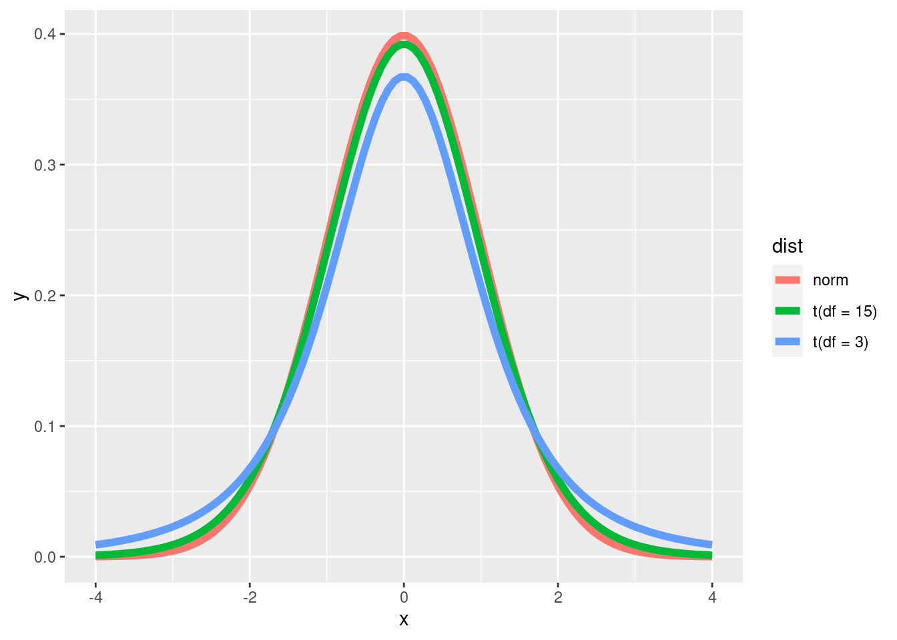

library(ggplot2)
library(dplyr)##
## Attaching package: 'dplyr'## The following objects are masked from 'package:stats':
##
## filter, lag## The following objects are masked from 'package:base':
##
## intersect, setdiff, setequal, unionIn this lesson, we’ll run through the t-test.
predictor == independent variable
response == dependent variable
T-tests are used when the response is a numeric, continuous variable. You can use a t-test for hypotheses related to whether a sample differs from a known or hypothetical population mean; whether two group differ from one another; or whether within-subject responses differ. T-tests are often used to compare the means of (no more than) two groups.
Like the normal distribution, The t-distribution is symmetrical and center around the mean. However, the tails (values further away from the mean) are “fatter” in the t-distribution. This is to account for the fact that the true population standard deviation is unknown. The t-distribution uses the sample standard deviation, but adjusts the probability density function by adding in “degrees of freedom” which is the number of observations minus 1. The more observations, the higher the degrees of freedom, and the more normal the t-distribution looks.
x <- seq(from = -4, to = 4, length = 100)
data <- data.frame(x = x,
y = c(dnorm(x, mean = 0, sd = 1), dt(x, df = 3), dt(x, df = 15)),
dist = rep(c('norm', 't(df = 3)', 't(df = 15)'), each = 100)
)
ggplot(data) +
geom_line(aes(x = x, y = y, color = dist), size = 2)
t.test()To perform a t-test in R, use the function t.test().
| Argument | Description | Test |
|---|---|---|
x |
vector of numeric data (the response variable) | all t-tests |
y = NULL |
vector of numeric data (response of a second group) | two-sample t-test (both Welch’s and Student’s), paired samples t-test, |
alternative = c('two-sided', 'less', 'greater') |
one (and only one) of the strings ‘two-sided’, ‘less’, or ‘greater’. Choose depending on your hypothesis. Default is ‘two-sided’. | all t-tests. |
mu = 0 |
The population or hypothetical mean. Default is 0. | One-sample t-test |
paired = FALSE |
Whether the data points should be paired or not (within subject). Default is false. | Paired samples t-test |
var.equal = FALSE |
Whether the two groups being tested have the same standard deviation. Default is false. | TRUE: Student’s t-test; FALSE: Welch’s t-test. |
In the one-sample t-test, you test whether your sample data differ from a population with a known or hypothetical mean. Often the hypothetical mean is 0.
Grad school is hard. It’s a lot of work, you may be working multiple jobs, you still want to have a social life, there’s often not enough time in the day to get everything done. The first thing that may suffer is sleep. Lack of sleep can have negative physical and mental effects, so you decide to see if grad students are getting an average of 8 hours of sleep. (Get enough sleep! And make sure you have a proper work life balance!). You randomly survey 50 graduate students throughout Austria asking them to estimate how many of hours of sleep per night they get.
Population: Graduate Students in Austria.
Sample: Randomly sampled Graduate Students.
H0: Austrian graduate students get an average of 8 hours of sleep per night.
HA: Austrian graduate students do not get an average of 8 hours of sleep per night.
Let’s simulate the sleep survey data
## The set.seed() function helps make your data reproducible. Use this anytime there is a random process in your analysis. Your data will likely still be different from mine.
set.seed(123)
hour_sleep <- seq(from = 3, to = 10, by = 0.25)
grad_sleep <- sample(hour_sleep, 50, replace = T, dnorm(hour_sleep, mean = 7.5, sd = 1.5))Independence: Our observations were randomly selected from different graduate institutions throughout Austria.
Normality: Our sample size is greater than ~ 30, because of the central limit theorem, we can assume our sampling distribution is normal.
x = grad_sleep : We want our numeric response here. In this case, our response is stored as a numeric vector.mu = 8 : “mu” is a Greek letter, \(\mu\). In statistics, it is used to represent the population mean. Our hypothetical population mean in this case is 8.alternative = 'two-sided' : We hypothesize that Austrian grad students do not get an average of 8 hours of sleep per night. Maybe they get more. Maybe less. But it’s not 8.t_output <- t.test(x = grad_sleep, mu = 8, alternative = 'two.sided')
t_output##
## One Sample t-test
##
## data: grad_sleep
## t = -2.0075, df = 49, p-value = 0.05023
## alternative hypothesis: true mean is not equal to 8
## 95 percent confidence interval:
## 7.169571 8.000429
## sample estimates:
## mean of x
## 7.585What is this information telling us? Do we accept the alternative hypothesis? Or the null hypothesis?
Let’s go into detail about what all of this is telling you.
data: : 1st line in t.test() output.
This tells you what went into the x = argument.
t = : 2nd line, 1st value in t.test() output.
t_output$statistic## t
## -2.007498This is your t-score. You may have heard of a z-score, the t-score is similar. Both are standardized scores that tell you how far a data point is from the mean. Technically, how many standard deviations from the mean. In the one-sample t-test the t-score tells you how many standard deviations the sample mean is from the population (possibly hypothetical) mean.
df = : 2nd line, 2nd value in t.test() output.
t_output$parameter## df
## 49The degrees of freedom. The number of independent observations minus 1. The t distribution uses degrees of freedom to adjust the probability density values at the ends of the distribution curve.
Degrees of freedom is the number of values that can vary when calculating a statistic. That’s probably a bit unclear, but an example might help. If you have a mean of 10 and you have 3 numbers, there are an infinite number of possibilities. YOu could have: (10, 10, 10) or (11, 10, 9) or (0.5, 19.25, 10.25) or (45, -15, 0) etc. Even if you know one of the numbers, there are still infinite possibilities: 12 , (8, 10), (5, 13), (-13, 31), etc. However, if you know two numbers, then you cannot vary the final number: 12, 14, (4). In this example, no other number works other than 4. Out of the three numbers, only two can vary freely; thus \(n - 1\).
p-value : 2nd line, 3rd value in t.test() output.
t_output$p.value## [1] 0.0502281Probably the most abused and misunderstood part of statistics. The p-value does not tell you that you did a good experiment, or that your results are true, or even that your results are false. Perhaps the best simplistic interpretation of a p-value is the following: Are your data weird if we assume the null hypothesis to be true?
P-values tell you about the probability of your results or more extreme results. What does the “more extreme” part mean? Well, a p-value has a big assumption and that assumption is that the null hypothesis is true. So, a more technical definition is the "probability of getting a value at least as extreme as the observed value under the assumption that the null hypothesis is true.
In the example above, you’ll notice that p = 0.0502281. So, if we assume that graduate students actually get 8 hours of sleep, we assume that we will see a sample mean of t_output$estimate or more extreme around 5% of the time.
alternative hypothesis : 3rd line in t.test() output.
This restates your alternative hypothesis. It is not a statement about whether you should accept the alternative hypothesis. In a one-sample t-test this will tell you that “true mean is not equal to \(\mu\)” for a two-sided test, “true mean is greater than \(\mu\)” for a one-sided test where you predict the population mean to be greater than the null hypothesis and “true mean is less than \(\mu\)” for a one-sided test where you predict the population mean to be less than the null hypothesis.
95 percent confidence interval: : 4th and 5th line in t.test() output.
t_output$conf.int## [1] 7.169571 8.000429
## attr(,"conf.level")
## [1] 0.9595% probability that the true population mean will be between these two values. This is giving you a range of the population parameter (the true population mean) based on the sample parameters (sample mean and sample standard deviation). Does the confidence interval range overlap with the null hypothesis?
sample estimates: 6th and 7th line in t.test() output.
t_output$estimate## mean of x
## 7.585The sample statistics being tested.
The two-sample t-test is useful for comparing two groups with each other. It’s usually used to test whether the sample means differ between the two groups.
There are two types of two-sample t-tests: the student’s t-test and Welch’s t-test. The first assumes that the variance is equal between the two groups. The second does not make this assumption. The default for the t.test() function is the Welch’s t-test (var.equal = FALSE).
Wugs love veggie burgers. Some love burgers made from mushrooms; others love burgers made from soybeans. Wugs aren’t good at flying but they can flap their wings and hover in the air for a few seconds. There are some anecdotal claims that soybean burger loving can hang in the air for longer than the mushroom burger lovers. Let’s test this claim!
set.seed(123)
wug_flight <- data.frame(food_pref = rep(c("soybean", "mushroom"), each = 35),
hang_time = c(rnorm(35, mean = 9.25, sd = 0.8),
rnorm(35, mean = 7.7, sd = 4)
)
)
str(wug_flight)## 'data.frame': 70 obs. of 2 variables:
## $ food_pref: chr "soybean" "soybean" "soybean" "soybean" ...
## $ hang_time: num 8.8 9.07 10.5 9.31 9.35 ...head(wug_flight)## food_pref hang_time
## 1 soybean 8.801619
## 2 soybean 9.065858
## 3 soybean 10.496967
## 4 soybean 9.306407
## 5 soybean 9.353430
## 6 soybean 10.622052H0: The true mean hang time is equal between the two groups.
HA: The true mean hang time in mushroom loving wugs is less than the true mean hang time in soybean loving wugs.
Independence: Our wugs were randomly selected.
Normality: Our sample size (for both groups) is greater than ~ 30, because of the central limit theorem, we can assume our sampling distribution is normal.
Homogeneity of variance : AKA “homoscedasticity”. Standard deviation is the same in both groups. If they aren’t you can use var.equal = False. We’ll discuss this in more detail later.
formula = hang_time ~ food_pref : We’ve done things a little different here. We’ve used a formula. To the left of the ~ we have the response and to the right we have the predictor variable, i.e., the groups we want to compare. If you don’t include the $ operator, then we have to include the data = argument with the appropriate data frame.alternative = 'less' : The difference between the groups is less than zero. This can be a bit confusing because how do you know if you should choose ‘greater’ or ‘less’? You have to figure out which group R treats as the “reference” group. We think mean hang time is greater for soybean wugs, so, if soybean is 1st then you would choose ‘greater’ (9 - 8 = 1). If soybean wugs are second, then it should be ‘less’ (8 - 9 = -1). R usually orders factors by alphabetical order, but you can check by using levels().levels(wug_flight$food_pref)## NULLvar.equal = False : We won’t assume equal variances.t_output <- t.test(formula = hang_time ~ food_pref,
data = wug_flight,
alternative = 'less',
var.equal = F)
t_output##
## Welch Two Sample t-test
##
## data: hang_time by food_pref
## t = -1.8739, df = 37.144, p-value = 0.03441
## alternative hypothesis: true difference in means between group mushroom and group soybean is less than 0
## 95 percent confidence interval:
## -Inf -0.1137087
## sample estimates:
## mean in group mushroom mean in group soybean
## 8.140543 9.280014The output is pretty much the same as the one-sample t-test. You’ll notice that data: makes it clear what is being evaluated by stating response “by” predictor. The confidence intervals go to -Inf on the low end. Since our hypothesis is that the true mean is less than 0, anything on the lower range isn’t important for us. You’ll also see that there are two sample estimates: the mean for each group.
So, what numbers does the two-sample t-test use? In the one-sample, we compared the “true population” mean with the sample mean. Now that we have two sample means what do we use? We use the difference between the two means. Take a look at the confidence intervals. Using the data from the two samples R calculates a 95% confidence interval for the true difference between the two group means. So, what is the difference in the sample mean?
as.numeric(t_output$estimate[1] - t_output$estimate[2])## [1] -1.139471So, our test evaluates the likelihood of seeing a difference of -1.1394709 (or less) if the difference in the true population means is actually 0.
The two-sample t-test uses each groups’ standard deviation to calculate the standard error used to calculate a t-score.
Let’s say that we want to test the whether dogs that go to the river on a walk eat more than dogs that go to the dog park. The problem is that we have a huge amount of variation in the sizes of dogs (therefore how much they eat). So, we decide to test the same dog in each condition. We randomly select 50 dogs and measure the amount of food they eat after a river walk and then on another day we test how much they eat after going to the dog park. We have 50 subjects and two experimental conditions, so 100 observations.
Do we run a one-sample t-test? Well we have two conditions so that doesn’t seem intuitive. What about a two-sample? Well, our observations are not independent from each other which violates one of the most important assumptions in statistical testing (independence of observations). But, our set up is a common experimental design so we have to have some way to deal with these type of data, right?
This where the paired sample t-test comes in! You can use a paired sample t-test when you have two conditions and each subject is measured in both conditions.
If you’re nervous about learning the details of a completely new type of test, you’re in luck! You basically already know how to do the paired sample t-test! The paired sample t-test is essentially a one-sample t-test. But how can that be!? Let’s see.
set.seed(123)
river <- rnorm(50, mean = 35, sd = 10)
dog_park <- sapply(river, FUN = function(x) x + rnorm(1, mean = 0.25, sd = 0.5))
dog_food <- data.frame(
subject = factor(rep(c(1:50), length.out = 50)),
condition = rep(c("river", "dog_park"), each = 50),
food_eaten = c(river, dog_park)
)
str(dog_food)## 'data.frame': 100 obs. of 3 variables:
## $ subject : Factor w/ 50 levels "1","2","3","4",..: 1 2 3 4 5 6 7 8 9 10 ...
## $ condition : chr "river" "river" "river" "river" ...
## $ food_eaten: num 29.4 32.7 50.6 35.7 36.3 ...head(dog_food)## subject condition food_eaten
## 1 1 river 29.39524
## 2 2 river 32.69823
## 3 3 river 50.58708
## 4 4 river 35.70508
## 5 5 river 36.29288
## 6 6 river 52.15065pairt_output <- t.test(food_eaten ~ condition, paired = T, data = dog_food)
pairt_output##
## Paired t-test
##
## data: food_eaten by condition
## t = 5.0481, df = 49, p-value = 6.558e-06
## alternative hypothesis: true difference in means is not equal to 0
## 95 percent confidence interval:
## 0.1945415 0.4518668
## sample estimates:
## mean of the differences
## 0.3232041# This uses a base R way of subsetting the data frame by the condition.
food_dif <- dog_food$food_eaten[which(dog_food$condition == 'dog_park')] - dog_food$food_eaten[which(dog_food$condition == 'river')]onet_output <- t.test(food_dif, mu = 0, paried = F)
onet_output##
## One Sample t-test
##
## data: food_dif
## t = 5.0481, df = 49, p-value = 6.558e-06
## alternative hypothesis: true mean is not equal to 0
## 95 percent confidence interval:
## 0.1945415 0.4518668
## sample estimates:
## mean of x
## 0.3232041A paired t-test performs a one-sample t-test by finding the between condition difference for each individual. The two outputs have a few differences: the heading telling you the test performed, the “data:” line, and the sample estimate description. All of the calculated values, however, are exactly the same. You should also see that the sample estimate for the paired t-test states “mean of the differences”, which is exactly what we calculated when we created the vector to use in the one sample t-test.
Our null hypothesis is that average hours per night of sleep is 8. We have a sample size of 50 observations.
h_null <- 8
n <- 50Our sample mean and sample standard deviation.
sample_mean <- mean(grad_sleep)
sample_sd <- sd(grad_sleep)Calculate the standard error of the mean by dividing the sample standard deviation by the square root of the
st_err_mean <- sample_sd / sqrt(n)Calculate a t-score by subtracting the hypothesized population mean from the sample mean. Divide by the standard error of the mean. Does our t-score match?
t <- (sample_mean - h_null) / st_err_mean
t## [1] -2.007498Use the pt() function to calculate the probability of getting this t-score (or a more extreme t-score) assuming the null hypothesis is true. This function is a bit more complicated. ???
pt(-abs(t), df = n-1, lower.tail = T)*2## [1] 0.0502281Confidence interval
conf_level <- 0.95
sample_mean - (abs(qt((1-conf_level)/2, df = n - 1) * st_err_mean))## [1] 7.169571sample_mean + (abs(qt((1-conf_level)/2, df = n - 1) * st_err_mean))## [1] 8.000429================================================================================
Last update on 2020-11-10
sessionInfo()## R version 4.1.1 (2021-08-10)
## Platform: x86_64-pc-linux-gnu (64-bit)
## Running under: Ubuntu 20.04.3 LTS
##
## Matrix products: default
## BLAS: /usr/lib/x86_64-linux-gnu/blas/libblas.so.3.9.0
## LAPACK: /usr/lib/x86_64-linux-gnu/lapack/liblapack.so.3.9.0
##
## locale:
## [1] LC_CTYPE=en_US.UTF-8 LC_NUMERIC=C
## [3] LC_TIME=de_AT.UTF-8 LC_COLLATE=en_US.UTF-8
## [5] LC_MONETARY=de_AT.UTF-8 LC_MESSAGES=en_US.UTF-8
## [7] LC_PAPER=de_AT.UTF-8 LC_NAME=C
## [9] LC_ADDRESS=C LC_TELEPHONE=C
## [11] LC_MEASUREMENT=de_AT.UTF-8 LC_IDENTIFICATION=C
##
## attached base packages:
## [1] stats graphics grDevices utils datasets methods base
##
## other attached packages:
## [1] dplyr_1.0.7 ggplot2_3.3.5
##
## loaded via a namespace (and not attached):
## [1] highr_0.9 bslib_0.2.5.1 compiler_4.1.1 pillar_1.6.2
## [5] jquerylib_0.1.4 tools_4.1.1 digest_0.6.27 jsonlite_1.7.2
## [9] evaluate_0.14 lifecycle_1.0.0 tibble_3.1.3 gtable_0.3.0
## [13] pkgconfig_2.0.3 rlang_0.4.11 DBI_1.1.1 yaml_2.2.1
## [17] xfun_0.25 withr_2.4.2 stringr_1.4.0 knitr_1.33
## [21] generics_0.1.0 sass_0.4.0 vctrs_0.3.8 grid_4.1.1
## [25] tidyselect_1.1.1 glue_1.4.2 R6_2.5.1 fansi_0.5.0
## [29] rmarkdown_2.9 farver_2.1.0 purrr_0.3.4 magrittr_2.0.1
## [33] scales_1.1.1 ellipsis_0.3.2 htmltools_0.5.1.1 assertthat_0.2.1
## [37] colorspace_2.0-2 labeling_0.4.2 utf8_1.2.2 stringi_1.7.3
## [41] munsell_0.5.0 crayon_1.4.1================================================================================
Copyright © 2021 Dan C. Mann. All rights reserved.